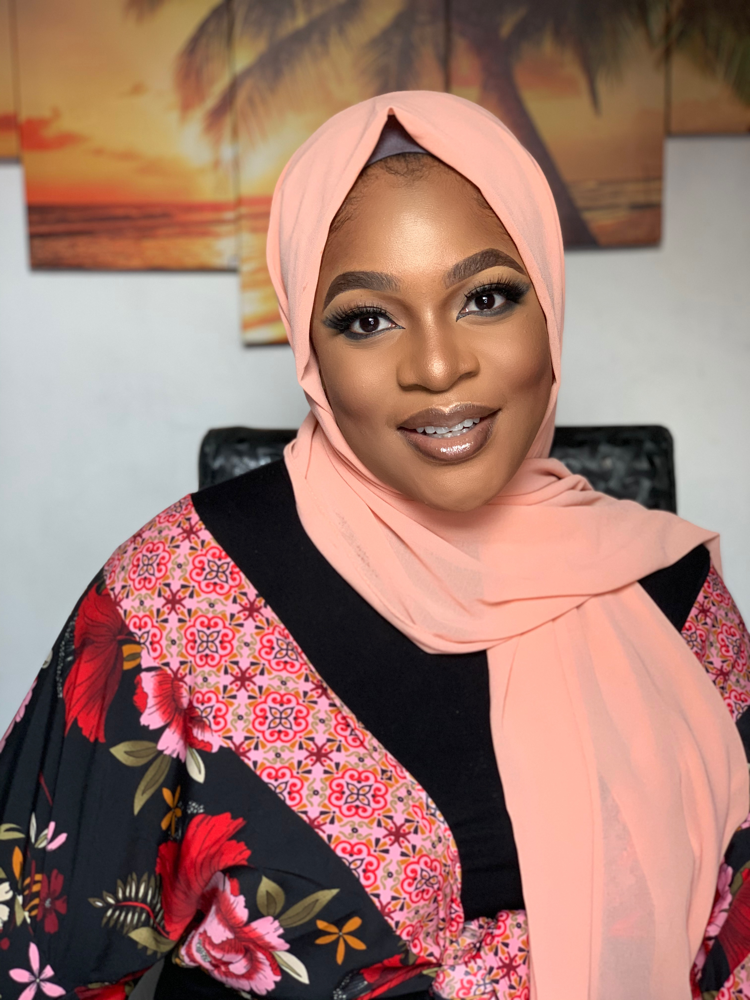

Personal Details
Name: InterestsMusic Beauty Sports SkillsHTML - 70% CSS - 40% Javascript - 10% |
Fareedah MustaphaA creative young individual who's looking to transition into technology through web development. A budding front end developer who’s proficient in technical development & has measurable success in team coordination who’s a talented problem solver with good collaboration with other freelance creative builders and developers. Work ExperienceNigerian Ports Authority, Lagos: February 2019 - October 2019Environment OfficerActively involved in both the administrative and operational activities of the organisation which included vessel, terminal & tank farm inspections. Sorting and dispatch of documents within and outside the department Tabik Express: June 2018 - August 2018Administrative AssistantLiaising with the director on how to handle requests, queries from customers and vendors while acting as a point of contact for internal and external clients in the organisation. Also involved in writing and distributing correspondence memos, letters, mails, faxes and logistics/business forms while preparing and coordinating regularly scheduled reports and developing and maintaining a filing system own the organisation Education & QualificationsZuri Training : March 2021 - Present
Intern - Front end Developer HIIT Training : February 2021 - March 2021Web development University of Ilorin : September 2014 - October 2018BSc. Plant Biology, graduated with a 2:2. Project include Fungal Endophytes Found in Leaves of Vitellaria Paradoxa - Unpublished |